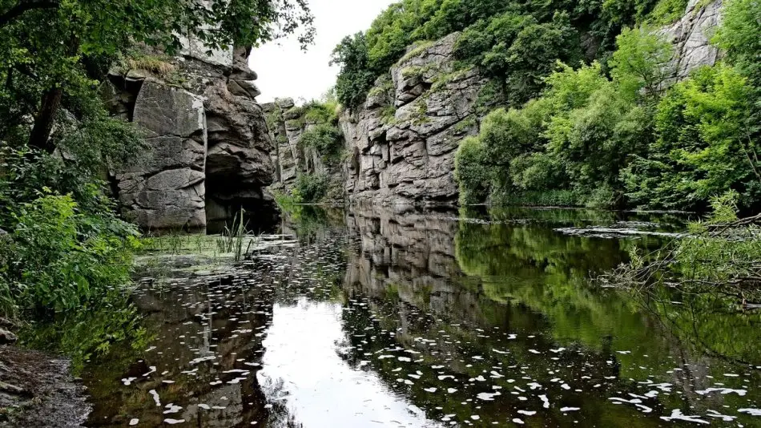
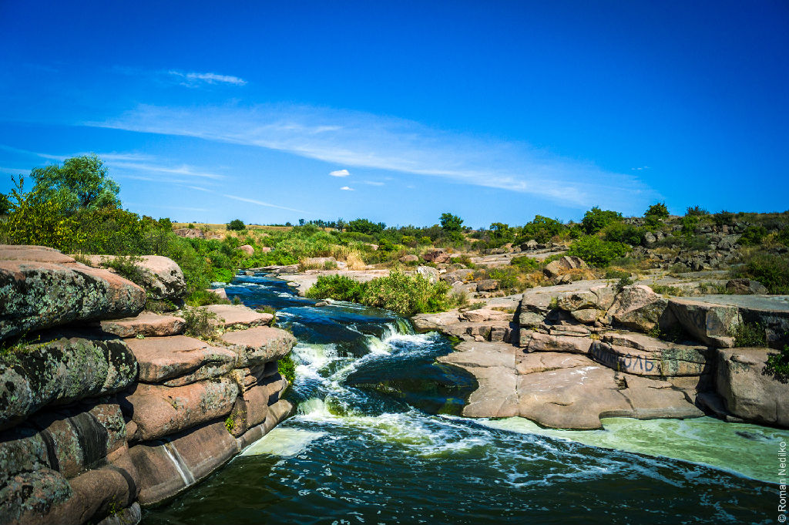
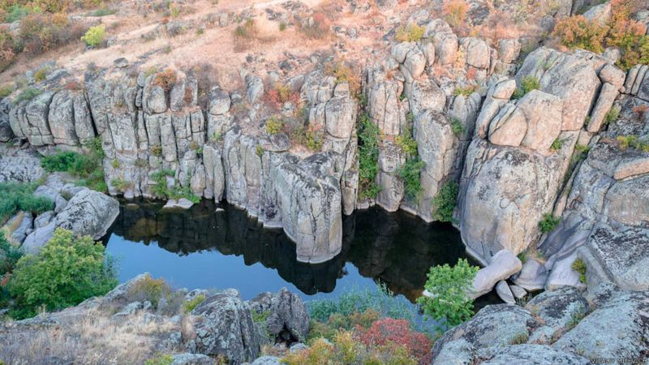
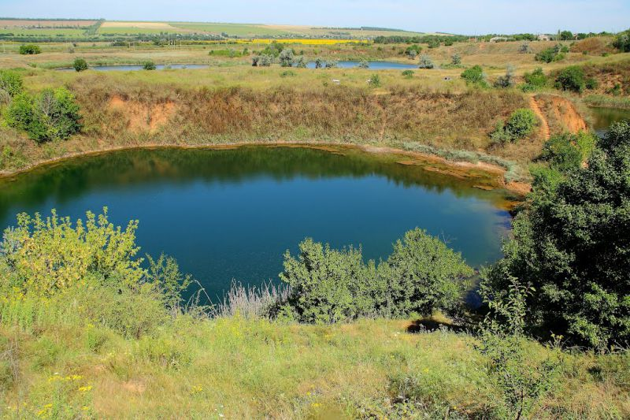
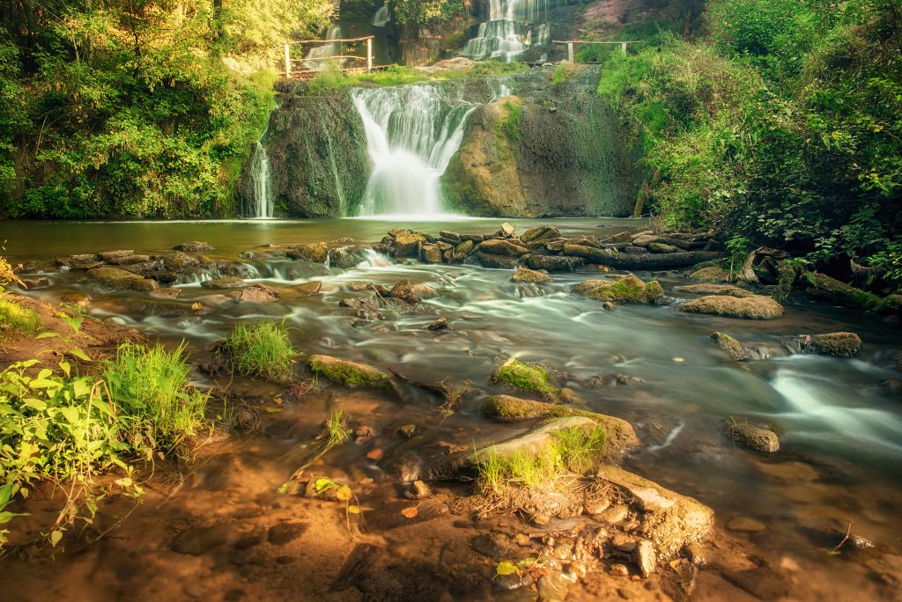
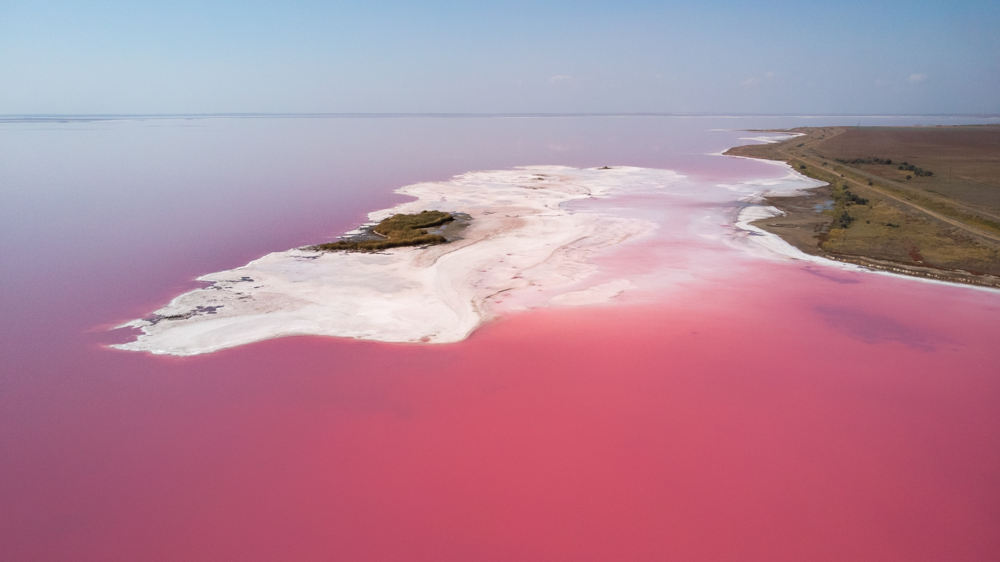
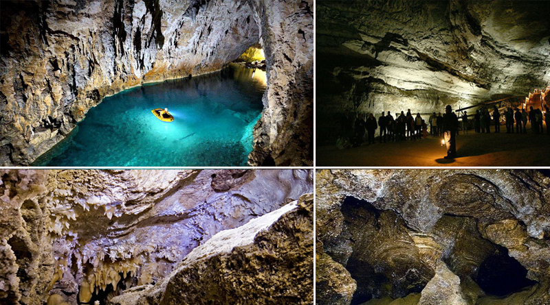
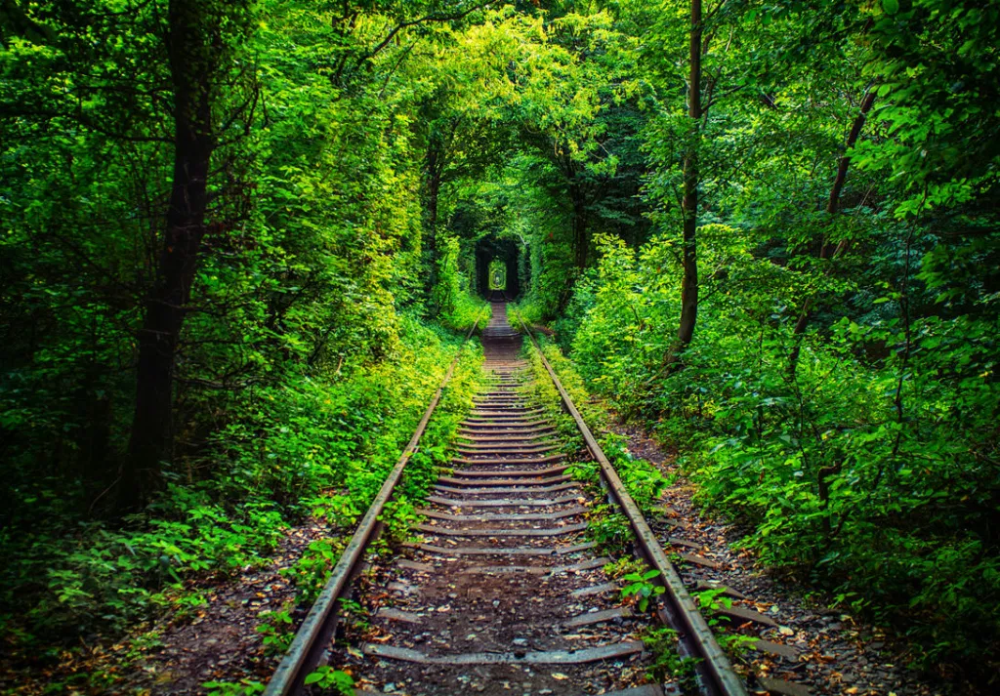

10 дивовижних місць України, які неодмінно варто відвідати
Буцький каньйон
Каньйон знаходиться в селі Буки, Маньківського району, в Черкаській області.
Каньйон в Буках вважається, і не без підстав, одним з найкрасивіших місць, що знаходяться в Центральній Україні. Його берегам з каменю налічується близько 2 млрд років, вони оздоблюють швидку річку - Гірський Тікич. Ці високі нерівні берега давно відвідують альпіністи, які із задоволенням тренуються в цих місцях.
Буцький каньйон бере початок у перекату греблі колись діючої ГЕС, висота греблі 2 метри і в народі вона називається водоспад Вир. Далі йде звивистою та довгою стрічкою. Уздовж каньйону знаходяться руїни старого млина, що працює на водяній стихії, вони дуже мальовничі. Млин був побудований в XIX столітті. Зараз насолодитися видами каньйону можна, підійшовши зовсім близько до води, тут можна перекусити, влаштувавши пікнік, і залишитися на ніч з наметом.
Біле озеро
Розташоване в селі Рудка, Володимирецького району, в Рівненській області.
Вода в озері чиста і прозора, можливо, за рахунок його карстового походження. Дно рівне, чисте і в основному піщане. Озеро було так названо внаслідок його зовнішнього вигляду з висоти - його колір здається зовсім білим, цей ефект виходить в результаті високого вмісту в його воді гліцерину. За рахунок нього озеро набуло лікувальні властивості, воно також отримало назву «озера молодості», а його вода м'яка навіть на дотик.
Шолоховський (Токівський) водоспад
Водоспад знаходиться в селі Токівське, в Нікопольському районі Дніпропетровської області.
Крім основної назви, він відомий ще як водоспад «Червоні камені» : в цих краях дуже багато червоного граніту. Він в цілому дуже характерний для Дніпропетровської області, часто зустрічається в архітектурних і монументальних спорудах. Розміри цього водоспаду не такі вже й великі - довжиною 14 метрів, перепади можуть бути як в кілька сантиметрів, так і в кілька метрів. Початок свій водоспад бере від притоки річки під назвою Базавлук, і виник він ще за часів мезозою.
Актовський каньйон
Його можна знайти в селі Актове, Вознесенського району в Миколаївській області.
Цей каньйон цікавий своїм незвичайним поєднанням скель, що нависають над водою, великих валунів з граніту - і багатого рослинного світу. У нього є друга назва - «Каньйон Диявола», а ще «Малий Крим». Своїми пейзажами він нагадує ландшафти Північної Америки. У цій місцевості проходить річка Мертвород – вона багата сірководнем і тому має дивний колір. Однак все одно тут можна знайти місця з кришталево чистою водою, придатні для купання. А недалеко від каньйону можна знайти ще незвичайне місце - Трикратський ліс-лабіринт.
Арбузинський каньйон
Цей каньйон знаходиться поруч з селами Трикрати і Актове, в Вознесенському районі Миколаївської області.
Це, по суті, молодший брат каньйону Актовський. Він так називається тому, що між його валунами наполегливо пробирається річка Арбузинка. За даними дослідників, скелі каньйону, що складаються з граніту і базальту, були сформовані приблизно 4 млрд років тому. У цей район не приходить зима - в силу вулканічного походження місцевості, адже вулкан, що лежить в основі цієї місцевості, до наших днів не зовсім ще охолов.
Обидва ці каньйони складають частину природного парку під назвою «Бузький гард».
Соледарське озеро
Розташоване при місті Соледар, в Донецькій області.
Ця водойма не так вже й проста, більш того, навіть злегка загадкова. Температура води в ній носить аномальний характер, не дарма водойму називають також озеро з підігрівом. Феномен озера полягає в тому, як би парадоксально це не було, що чим глибше місце в озері, тим вище температура його води. Були спроби дослідити місцеву загадку природи, але виявилося не так просто зайнятися цією справою. Коли аквалангісти намагалися спуститися на дно озера, було помічено, що вода поступово ущільнюється, по суті перетворюючись на подобу рідкого скла, при цьому виштовхує на поверхню будь-кого, хто намагається спуститися якнайнижче.
Джуринський водоспад
Знаходиться біля села Нирків, в Заліщицькому районі Тернопільської області.
Джуринський водоспад - найвищий рівнинний водоспад Європи. Карельський водоспад Кивач трохи поступається нашому хоча росіяни, звичайно ж, вважають найвищим саме Ківач.
Максимальний перепад висот між нижньою і верхньою точками досягає шістнадцяти метрів. Обсяг падаючої з водоспаду води просто невообразім: в багатьох місцях поруч з водоспадом ви просто не почує, що стоїть поряд співрозмовника.
Як свідчать легенди тутешніх місць і підтверджують деякі з істориків, цей унікальний водний джерело з'явився завдяки турецьким загарбникам, які пустили місцеву річку Джурин по іншому руслу, в надії замучити захисників спрагою і нарешті захопити оборонну фортецю. Після відходу ворога і утворився цей прекрасний водоспад.
Лемурійське озеро
Озеро в Херсонській області України, розташоване неподалік від сіл Григорівка та Нововолодимирівка, на західній частині затоки Сиваш.
Рожевий колір водойми зумовлений дією одноклітинних водоростей Дуналіелла солоноводна, які під дією сонця виробляють бетакаротин. Чим спекотнішим видається літо, тим більше води випаровується з озера й тим насиченішого кольору набуває ропа. Відступаючи, вода залишає на березі тонни білого соляного «піску». Місцями соляні кристали збиваються, утворюючи справжні «сталаґміти». Білосніжний берег та рожеве озеро справляють незабутнє враження, перетворюючи цю частину Херсонщини на один з наймальовничіших та найзагадковіших куточків України.
Оптимістична печера
Печера Оптимістична розташована поблизу села Королівка Борщівського району Тернопільської області.
Утворилася внаслідок розчинення підземними водами гіпсів неогенового віку (14 мільйонів років). Вона являє собою складний за будовою горизонтальний площинний лабіринт гротів, ходів і галерей різної форми й розміру, закладений у 20-метровому пласті темно-бурого і жовтувато-сірого гіпсу.
найбільшим скарбом печери є вторинні мінеральні утворення, що протягом десятків тисяч років росли у підземних порожнинах. Це насамперед гіпсові кристали різноманітної форми та кольору, які називають "печерним снігом". Великий інтерес являють собою нещодавно відкриті кальцитові геліктити, унікальні для гіпсових печер. Це білі, жовті, рожеві утворення химерної форми, які нагадують морські анемони, корали.
Тунель кохання
Популярний туристичний об'єкт, розташований біля селища Клевань, що у Рівненському районі Рівненської області.
З тунелем пов’язані цікаві легенди. За одною з них, цей зелений коридор існував ще при князях Чарторийських, і одного разу став прихистком для пари закоханих молодих людей – утікачів з клеваньского замку. Не менш цікаво виглядає інша версія, про молодого інженера-поляка, який закохався в дівчину з Клевані і побудував залізницю прямо навпростець через ліс, аби скоротити дорогу з Оржева, в якому він жив, до коханої жінки. Згодом їх життєві шляхи розійшлися, та місцеві мешканці переказують, що ці люди пронесли кохання через все життя. Неймовірна історія!
Зелений тунель має не тільки неперевершений вигляд і колорит, романтичну історію, але і незвичайну ауру, атмосферу місця, де здійснюються мрії і поєднуються серця. Цю ауру символізує зелена арка, а колія на дві рейки – шлях для двох доль. Є ряд повір’їв щодо тунелю та його властивостей. Закохані вірять, що поцілунок в тунелі скріпить їхню любов на все життя, а якщо вони стануть на рейки і пригорнуться одне до одного серцями, то вже ніколи не розстануться. Тунель користується популярністю у молодят, вони залюбки проводять тут весільні фотосесії і навіть висаджують квіти, що символізують ніжні і пристрасні почуття. Місцеві жителі запевняють, що відвідини тунелю – хороша прикмета для будь-кого і радять відвідувати його декілька разів на рік.
